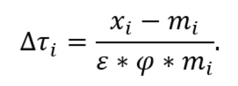
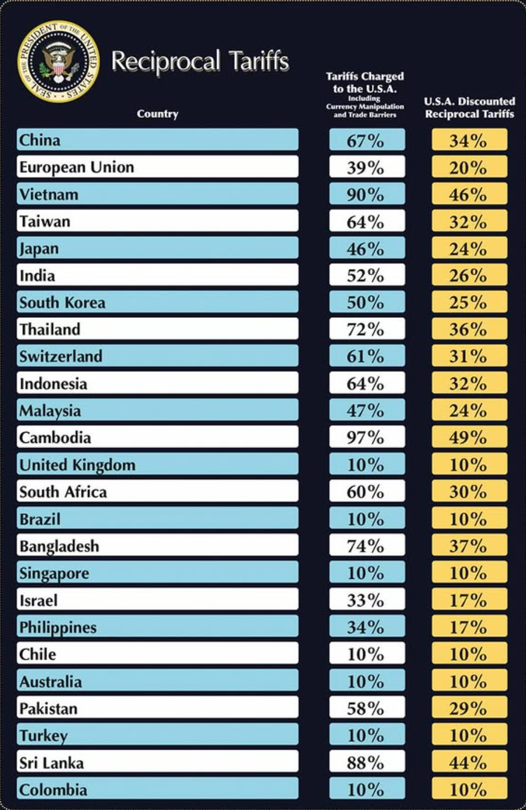

On April 2, 2025, President Donald Trump proclaimed “Liberation Day,” announcing a series of sweeping tariffs aimed at recalibrating the United States’ trade relationships.
Tariff Formula

The formula introduced by the Office of the United States Trade Representative (USTR) 1 aims to determine the change in tariff rate ($\Delta \tau_i$) that would be required to achieve a bilateral trade balance of zero between the United States and a specific country ‘i’. This means adjusting tariffs so that the value of imports from country ‘i’ equals the value of exports to country ‘i’. The formula looks big and scary with mathsy symbols but it is really quite simple. Let’s break it down.
Understanding the Formula Components:
Left side of the formula:
-
$\Delta$ (Delta) represents the amount of change
-
$\tau$ (Tau) represents tariff
-
$_i$ just means for one specific country, country ‘i’
-
$\Delta \tau_i$ represents the percent change in the tariff rate applied by the U.S. to imports from country ‘i’.
Right side of the formula:
-
$x_i$ represents the total exports to country ‘i’ from the U.S.
-
$m_i$ represents the total imports from country ‘i’ from the U.S.
-
$\varepsilon$ (Epsilon) represents the price elasticity of import demand, indicating how sensitive the quantity of imports is to changes in price. A negative value suggests that as prices increase due to tariffs, the quantity of imports decreases. This also assumes the price elasticity of import demand is linear (not nearly as simple in reality).
-
$\varphi$ (Phi) represents the passthrough from tariffs to import prices, reflecting the extent to which tariff changes affect the prices of imported goods.
Interpreting the Formula
The formula is expressed as:
$$\Delta \tau_i = \frac{x_i - m_i}{\varepsilon \cdot \varphi \cdot m_i}$$
This equation calculates the necessary change in the tariff rate ($\Delta \tau_i$) to eliminate the trade imbalance with country ‘i’. Here’s how each component interacts:
-
Trade Balance ($x_i - m_i$): The numerator represents the trade imbalance. If $x_i > m_i$, the U.S. has a trade surplus with country ‘i’; if $x_i < m_i$, there’s a trade deficit.
-
Elasticity and Pass-Through ($\varepsilon \cdot \varphi \cdot m_i$): The denominator adjusts this imbalance by considering how responsive import quantities are to price changes ($\varepsilon$), how much of the tariff is reflected in import prices ($\varphi$), and the total import value ($m_i$).
By dividing the trade imbalance by this adjusted import value, the formula estimates the tariff rate change needed to equalise imports and exports with country ‘i’.
Elasticity and Pass-Through Considerations
The price elasticity of import demand ($\varepsilon$) and the tariff pass-through rate ($\varphi$) are critical factors in this calculation. Different types of goods exhibit varying elasticities due to factors such as necessity, availability of substitutes, and consumer preferences. For example:
- Necessities: Goods like essential medicines tend to have inelastic demand; consumers will purchase them regardless of price changes.
- Luxury Items: Products such as high-end electronics often have elastic demand; consumers may forego purchases if prices rise.
The Trump administration set the price elasticity of import demand ($\varepsilon$) at 4 and the elasticity of import prices with respect to tariffs ($\varphi$) at 0.25. $\varepsilon$ and $\varphi$ actually cancel out in the denomenator of the equation [$\varepsilon \times \varphi = 4 \times 0.25 = 1$]. This means the ‘Tariffs Charged to the U.S.A.’ column is really just the trade deficit as a percentage of imports. In addition, the uniform values set for $\varepsilon$ and $\varphi$ across all goods and countries oversimplifies the complexities inherent in global trade, where elasticities can vary significantly across products and markets. Such a one-size-fits-all approach lacks the granularity needed for precise tariff adjustments and may not effectively address specific trade imbalances.
Tariff Example Scenario
To illustrate how changes in tariffs affect consumer prices, consider a hypothetical situation where Country A imports a USD 100 speaker from Country B.
-
Initial Price: Before any tariff changes, the speaker costs USD $100$ in Country A.
-
Tariff Introduction: Country A introduces a $24$% tariff on all goods from Country B.
- Tariff Amount: USD $100 \times 24$% = USD $24$
- Price Impact on Consumers: The effect on consumer prices depends on $\varphi$, the passthrough rate.
- Assuming $\varphi = 0.25 $, the portion of the tariff passed through to consumers is: $\Delta \tau_i \times \varphi = 24$% $\times 0.25 = 6$% $= 0.06$
- Thus, consumers in Country A will see a 6% increase in the price of the speaker: USD $100 \times (1 + 0.06) =$ USD $100 \times (1.06) =$ USD $106$
- Effect on Demand: The impact on demand depends on $\varepsilon$, the price elasticity of import demand.
- Assuming $\varepsilon = 4$, the percentage decrease in demand is: $\Delta \tau_i \times \varphi \times \varepsilon = 6$% $\times 4 = 24$%
- This means demand decreases to $(100$%$ - 24$%$) = 76$% of the original level.
Deriving the Formula
To understand the origin of the USTR formula:
- Trade Deficit: $m_i - x_i$ represents the trade deficit.
- Deficit as a Percentage of Imports: $\frac{m_i - x_i}{m_i}$ indicates the percentage imports have to go down to balance trade.
- Demand Reduction Relation: This reduction is also expressed as $\Delta \tau_i \times \varphi \times \varepsilon$.
Equating the two expressions: $$\Delta \tau_i \times \varphi \times \varepsilon = \frac{m_i - x_i}{m_i}$$
Solving for $\Delta \tau_i$:
$$\Delta \tau_i = \frac{m_i - x_i}{\varphi \times \varepsilon \times m_i}$$
So, is this essentially the approach employed by the Trump administration? Albeit they subtract imports from exports ($x_i - m_i$), rather than the conventional method of subtracting exports from imports ($m_i - x_i$), effectively multiplying the result by $-1$.
Checking Formula Application Consistency
Unfortunately the woes do not stop here since the formula is not applied consistently to all countries.

On the USTR website they have exact import and export figures for most countries in the chart.
Feel free to use my Python script to web scrape trade summaries for 105 out of 123 regions listed on the USTR website.
You can view the code by expanding the toggle below labelled “Show Python Code”.
A list of countries that were not retrieved during the scrape is also available in the “Show Missing Countries” section below.
Show Python Code
import requests
from bs4 import BeautifulSoup
import re
import pandas as pd
from tqdm import tqdm
headers = {
"User-Agent": "Mozilla/5.0"
}
base_url = "https://ustr.gov"
region_urls = [
"/countries-regions/africa",
"/countries-regions/americas",
"/countries-regions/southeast-asia-pacific",
"/countries-regions/europe-middle-east/europe",
"/countries-regions/europe-middle-east/middle-east/north-africa",
"/countries-regions/europe-middle-east/russia-and-eurasia",
"/countries-regions/south-central-asia",
"/countries-regions/china-mongolia-taiwan",
"/countries-regions/japan-korea-apec"
]
def get_country_links(region_url):
try:
res = requests.get(base_url + region_url, headers=headers, timeout=10)
soup = BeautifulSoup(res.content, "html.parser")
country_links = []
for a in soup.select("a[href^='/countries-regions']"):
href = a.get("href")
if href and href != region_url and href.startswith(region_url):
country_links.append(href)
return list(set(country_links))
except Exception as e:
print(f"Failed to fetch country links from {region_url}: {e}")
return []
def get_trade_summary(country_url):
full_url = base_url + country_url
try:
res = requests.get(full_url, headers=headers, timeout=10)
soup = BeautifulSoup(res.content, "html.parser")
paragraphs = soup.find_all("p")
for p in paragraphs:
text = p.get_text(strip=True)
if re.search(r"U\.S\. (total )?goods trade with .*? (was|were|totaled|totalled)", text, re.IGNORECASE):
return {
"country_url": full_url,
"trade_summary": text
}
print(f"No trade summary found in {full_url}")
except Exception as e:
print(f"Failed to fetch {full_url}: {e}")
return None
all_summaries = []
for region in region_urls:
print(f"\nProcessing region: {region}")
country_links = get_country_links(region)
for country in tqdm(country_links, desc=f"Scraping countries in {region}"):
summary = get_trade_summary(country)
if summary:
all_summaries.append(summary)
# Build DataFrame
df = pd.DataFrame(all_summaries)
df = df.drop_duplicates(subset="country_url").reset_index(drop=True)
Show Missing Countries
The following countries are missing:
Americas (7):
- Guatemala
- Haiti
- Honduras
- Nicaragua
- Panama
- Paraguay
- Peru
Europe → Middle East/North Africa (8):
- Algeria
- Israel
- Jordan
- Libya
- Oman
- Saudi Arabia
- Tunisia
- Yemen
South & Central Asia (2):
- Iraq
- Uzbekistan
China, Mongolia & Taiwan (1):
- Taiwan
All summaries follow a similar format having been generated from their data making them somewhat easy to clean into ‘Import’ and ‘Export’.
Checking ‘Tariffs Charged to the U.S.A.’
I will showcase the inconsistencies in the application of the tariff formula using Malaysia and Australia since they represent both cases and happen to be the countries where I grew up.
Case 1: Malaysia (U.S. is in a trade deficit)
https://ustr.gov/countries-regions/southeast-asia-pacific/malaysia
U.S. export to Malaysia ($x_{Malaysia}$): USD $27.7$ billion $=$ USD $2.77 \times 10^{10}$
U.S. import from Malaysia ($m_{Malaysia}$): USD $52.5$ billion $=$ USD $5.25 \times 10^{10}$
Plug into their tariff formula:
$\Delta \tau_{Malaysia} = \frac{x_{Malaysia} - m_{Malaysia}}{\varepsilon \cdot \varphi \cdot m_{Malaysia}}$
$\Delta \tau_{Malaysia} = \frac{2.77 \times 10^{10} - 5.25 \times 10^{10}}{4 \cdot 0.25 \cdot 1.67 \times 10^{10}}$
$\Delta \tau_{Malaysia} = \frac{-2.48 \times 10^{10}}{5.25 \times 10^{10}}$
$\Delta \tau_{Malaysia} = \frac{-2.48}{5.25}$
$\Delta \tau_{Malaysia} = -0.47 = -47$%
Behold the Malaysia $47$% ‘Tariffs Charged to the U.S.A.’ matching the figure with the $\times (-1)$ mentioned earlier having come back.
Case 2: Australia (U.S. is in a trade surplus)
https://ustr.gov/countries-regions/southeast-asia-pacific/australia
U.S. export to Australia ($x_{Australia}$): USD $34.6$ billion $=$ USD $3.46 \times 10^{10}$
U.S. import from Australia ($m_{Australia}$): USD $16.7$ billion $=$ USD $1.67 \times 10^{10}$
Plug into their tariff formula:
$\Delta \tau_{Australia} = \frac{x_{Australia} - m_{Australia}}{\varepsilon \cdot \varphi \cdot m_{Australia}}$
$\Delta \tau_{Australia} = \frac{3.46 \times 10^{10} - 1.67 \times 10^{10}}{4 \cdot 0.25 \cdot 1.67 \times 10^{10}}$
$\Delta \tau_{Australia} = \frac{1.79 \times 10^{10}}{1.67 \times 10^{10}}$
$\Delta \tau_{Australia} = \frac{1.79}{1.67}$
$\Delta \tau_{Australia} = 1.07 = 107$%
So according to the formula Australia should have $-107$% ‘Tariffs Charged to the U.S.A.’ and the U.S. should implement a negative tariff for goods from Australia (according to their formula) if the goal is simply to balance budget. But the figure shows ‘$10$%’? What is happening?
So how is the Tariffs ‘Charged to the U.S.A’ calculated?
I want to emphasise that these examples haven’t been cherry-picked to fit a narrative. The same formula appears to be consistently applied to calculate the “Tariffs Charged to the U.S.A.” for each country - albeit in a rather unique way.
From what I can discern, the calculation uses the following structure:
$\Delta \tau_i = \frac{m_i - x_i}{\varepsilon \cdot \varphi \cdot m_i}$
NOTE $({m_i - x_i})$ is the conventional way around - essentially their formula $\times -1$
However, the final reported tariff values seem to apply a maximum function like so: Tariffs Charged $ = \max(10, \Delta \tau_i)$
This formulation matches the published figures almost exactly - with only minor discrepancies of $1$% likely due to rounding.
The maximum function (denoted by ‘$\max()$’) returns the greater of the two values inside the parentheses. In this context, it ensures that the tariff charged is never less than 10, even if the computed value $\Delta \tau_i$ is lower.
‘U.S.A. Discounted Reciprocal Tariffs’
The U.S.A. Discounted Reciprocal Tariffs is calculated using the following formula:
$$\max\left(10, \left\lceil \frac{\text{Tariffs Charged to the U.S.A}}{2} \right\rceil \right)$$
In the expression, the ceiling function (denoted by ‘$\left\lceil \right \rceil$’) rounds a number up to the nearest whole number. This ensures that when the ‘Tariffs Charged to the U.S.A.’ are divided by 2, any fractional result is rounded up to avoid underestimating the reciprocal tariff. The formula also ensures a minimum reciprocal tariff of 10, regardless of the outcome of the division.
Conclusion: A Politicised Equation in Disguise
While cloaked in economic jargon and mathematical veneer, the Trump administration’s tariff formula operates less as a rigorous policy tool and more as a rhetorical device. On its surface, the formula provides a seemingly objective mechanism to rebalance trade by adjusting tariffs based on bilateral deficits. But a closer examination reveals inconsistencies in application, arbitrary thresholding, and the deliberate use of minimum tariff floors - choices that reflect political priorities rather than economic precision.
The use of a uniform elasticity and passthrough rate across diverse economies flattens the complex landscape of global trade. Worse still, the selective enforcement of the formula-favouring floor values or ignoring negative outcomes - undermines its internal logic and casts doubt on its legitimacy as a basis for policy. Rather than guiding evidence-based decision-making, the formula becomes a convenient scaffold to justify predetermined outcomes.
In the end, what’s dressed up as a data-driven recalibration of trade is, in many respects, a manually tuned equation engineered to serve a political narrative. Understanding the math behind it doesn’t just expose technical oversights - it reveals the intent.